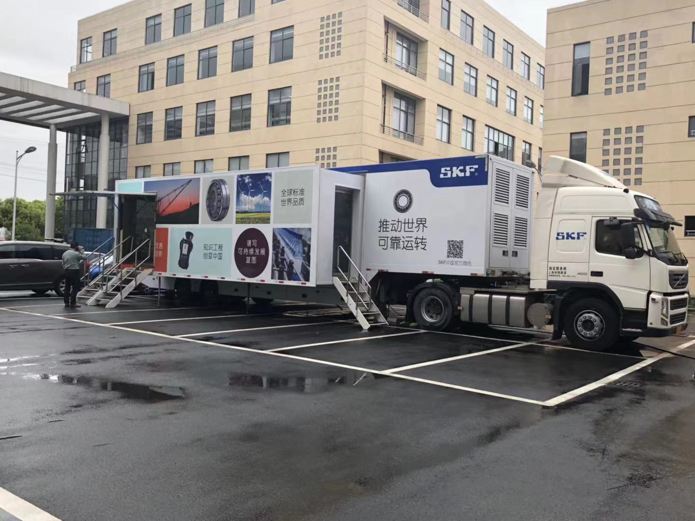
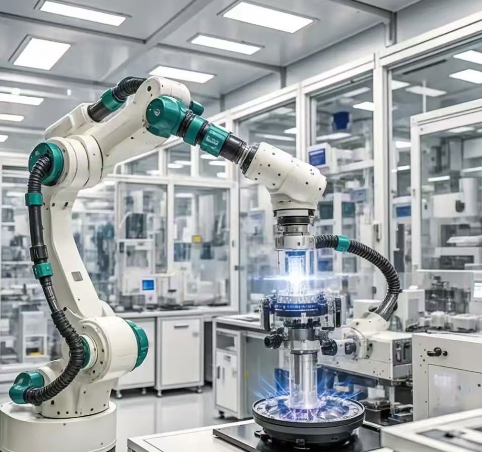
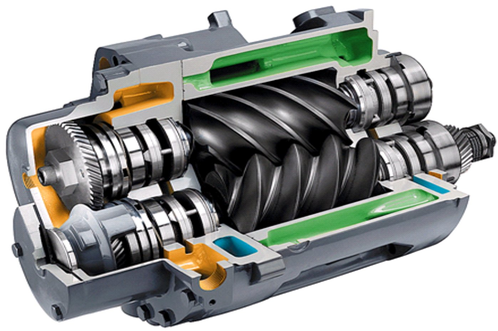
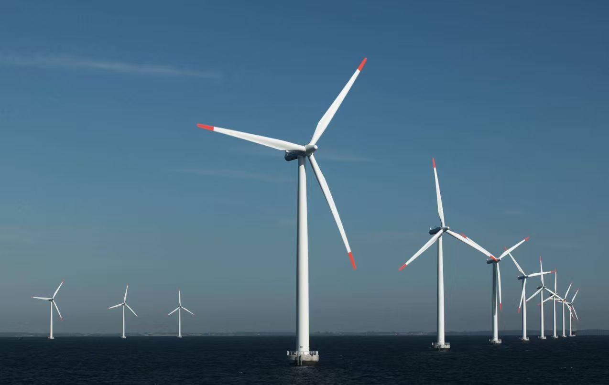
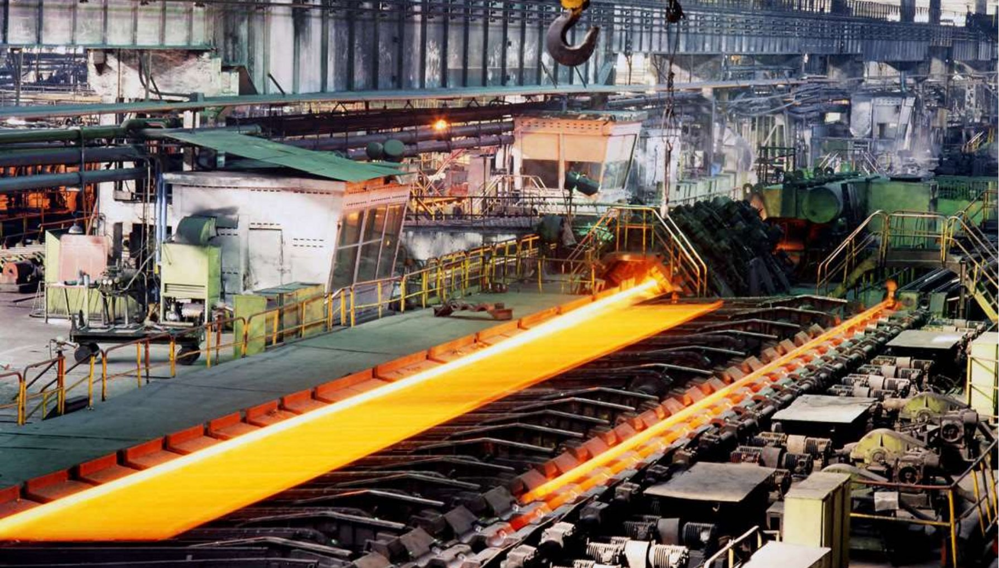
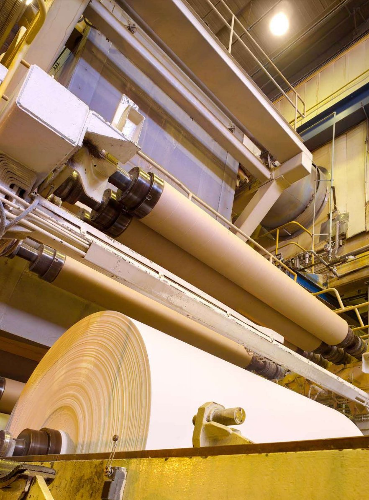
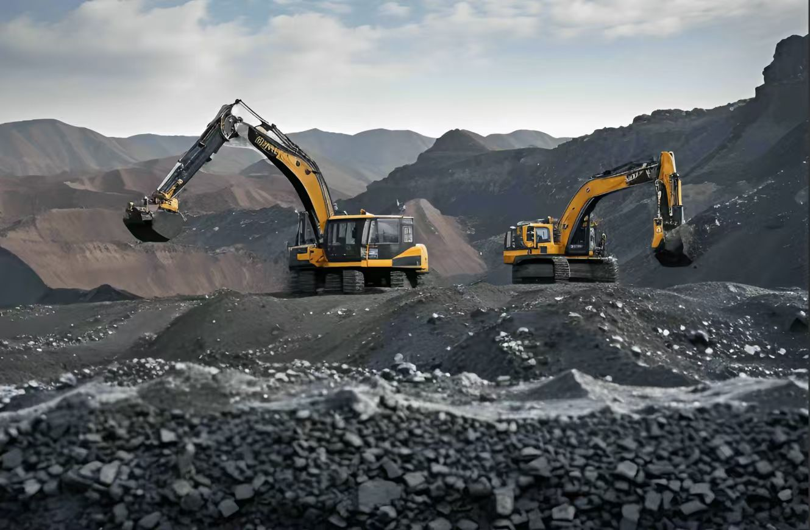

倍富在江苏服务的六大工业领域——每个行业都有可验证的真实工程数据，源自 SKF 全球与本地团队多年积累。
重点服务行业
年轴承服务积累
紧急件本地响应窗口
全周期服务能力

精度退化、热变形、振动——精密设备的轴承诊断需要专业工具

腐蚀、洁净要求、密封失效
——化工厂对轴承的可靠性要求是零容忍

低速重载、远程监测难度、高可靠性要求——风电是 SKF 的传统强项

高温、重载冲击、连续运转下的早期失效——冶金行业的轴承经典难题

潮湿、纸屑粉尘、腐蚀
——纸机轴承是环境适配性最严格的工况之一

冲击重载、户外作业、密封恶劣——重工业对故障停机的成本最敏感
上面的案例数据来自 SKF 全球与本地团队积累。倍富在江苏做的是：把这些经过验证的技术方案，针对您的具体工况落地。
工程师到厂，识别高风险设备与典型失效模式。
把行业经验映射到您的设备清单与工况参数，给出选型与更换建议。
规范安装、状态监测接入、月度复盘——让改善长期可验证。